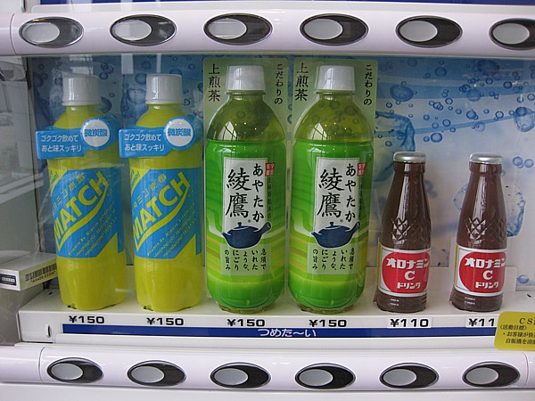
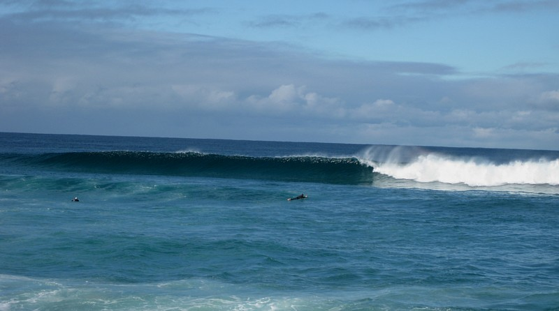

The Long Run - Across Australia 2011
I made this trip in May 2011.
The original trip report posted on a forum was hacked so this is being restored on my own website .
Hope you enjoy it !

The bike trip was from Perth along the coast of Oz to Adelaide then north to Queensland.

To get to Perth I flew through Toronto , Tokyo and Singapore.
We crossed over the Kamchatka peninsula in Siberia , it was all ice and snow.
Coming into Japan when we crossed green mountains norteast of Tokyo , I realised some coastal areas below me were probably destroyed by the huge tidal waves one year ago.

When we landed at Narita we taxied in from an outlying runway, the plane
literally passed through suburbs close to the fence, farm crops were only feet
away from the wing tips. I could look into workshops and garages fixing cars,
they were that close.

In the terminal I had 2 hours to kill, the vending machines were quite amazing.
I was impressed with the washroom, super clean regardless of the style.
I only
wished I had more time to see Japan , especially the countryside. It
looked very pretty.
After a very full air canada plane for 12 hours I boarded an Eastern airlines flight to Singapore. It was running at 30% capacity and that was due to a scare targeting Americans , so people were avoiding their planes. Not bad, I could sleep across four seats for a few hours. In Singapore well rested I boarded Singapore airlines to Perth, it was standing room only.


We took a trip to the south coast to visit his uncle Kevin who lives in the town of Denmark west of Albany.
Kevin moved his family there to access the great surf beaches nearby.
When he's not running his engineering business, he heads out with his board and enjoys life.
Looks like paradise to a city dweller.

After a short drive from town we were on a huge beach with great
waves.
One of the local dogs followed the three of us along the shore to
the best breaks.
There was another dog sitting on the beach waiting
for his surfer to come back in.

I sat there with the two dogs and took
pics of Arran and Kevin riding their boards.
I sat there with the two dogs and took
pics of Arran and Kevin riding their boards.
I did some body surfing
close to shore but the big surf farther out was way too powerful.

After my two week stay in Perth with Arran I had arranged to transport a rental bike back to Queensland.
It was a great opportunity to cross Oz one more time.
I had done it hitch hiking, in my car and by train but never on two wheels.

Aussie Biker rentals had a GS1200 that had been dropped off in Perth by a German rider ( in more ways than one ).
They offer half price rates if you can ride their bike back to Noosa Heads on the Gold Coast.

I was given 10 days to get it home. The owner Dave xxx is a great guy and runs a
full selection of bikes from his shop, touring, adventure and off road. He flew
out to Perth to prep my bike as the German rider had gone into the bush at speed
on the nullarbor. Luckily the damage was only cosmetic, destroyed the right bag,
windshield and mirror. Some road rash on the valve cover but no leaks. I picked
up an extra kayak bag to make up for the missing hard case.

Leaving Perth I headed east on the Great eastern hwy Towards kalgoorlie.
My destination was Adelaide , about 3000 kms east where I would visit another
friend.
The land is very parched in WA and it was dry yellow fields heading east. At
Meckering I looked at the earthquake museum from their big event in 19??. The
fault line turned rail tracks into